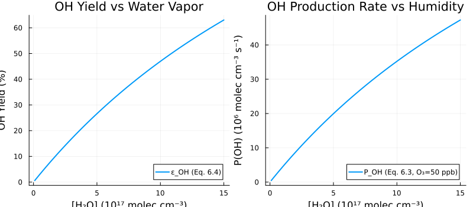

OH Production
Overview
The hydroxyl radical (OH) is the primary oxidant in the troposphere, initiating the oxidation of most trace gases. The dominant source of OH is photolysis of ozone at wavelengths below 320 nm, producing electronically excited O(1D) atoms which can react with water vapor to form OH.
This system implements equations 6.1-6.4 from Section 6.1 of Seinfeld & Pandis, computing the steady-state O(1D) concentration, the OH yield (number of OH radicals produced per O(1D) formed), and the OH production rate.
Reference: Seinfeld, J.H. and Pandis, S.N. (2006). Atmospheric Chemistry and Physics: From Air Pollution to Climate Change, 2nd Edition. John Wiley & Sons. Section 6.1, pp. 204-207.
GasChem.OHProduction — Function
OHProduction(; name)ModelingToolkit System for OH radical production from O₃ photolysis.
Implements the steady-state O(¹D) concentration (Eq. 6.1), OH production rate (Eq. 6.3), and OH yield (Eq. 6.4) from Seinfeld & Pandis Chapter 6.
This is an algebraic system that computes diagnostic quantities from input concentrations.
Input Variables (must be provided)
O3: Ozone concentration [m⁻³]H2O: Water vapor concentration [m⁻³]M: Total air number density [m⁻³]
Output Variables (computed)
O1D: Excited oxygen O(¹D) steady-state concentration [m⁻³]P_OH: OH production rate [m⁻³ s⁻¹]ε_OH: OH yield (fraction of O(¹D) producing OH) [dimensionless]
Parameters
j_O3: O₃ photolysis rate producing O(¹D) [s⁻¹] (default: 6×10⁻⁵ s⁻¹ at surface, solar zenith 0°)k3_N2: Rate constant for O(¹D) + N₂ quenching [m³ s⁻¹]k3_O2: Rate constant for O(¹D) + O₂ quenching [m³ s⁻¹]k4: Rate constant for O(¹D) + H₂O → 2OH [m³ s⁻¹]f_N2: Fraction of M that is N₂ [dimensionless]f_O2: Fraction of M that is O₂ [dimensionless]
Rate Constants at 298 K (from Table B.1, Seinfeld & Pandis)
- j_O3 ≈ 6 × 10⁻⁵ s⁻¹ (at surface, solar zenith angle 0°, Figure 4.15)
- k3_N2 = 2.6 × 10⁻¹¹ cm³ molecule⁻¹ s⁻¹ = 2.6 × 10⁻¹⁷ m³ s⁻¹
- k3_O2 = 4.0 × 10⁻¹¹ cm³ molecule⁻¹ s⁻¹ = 4.0 × 10⁻¹⁷ m³ s⁻¹
- k4 = 2.2 × 10⁻¹⁰ cm³ molecule⁻¹ s⁻¹ = 2.2 × 10⁻¹⁶ m³ s⁻¹
Implementation
The OHProduction component is an algebraic system that computes diagnostic quantities from input concentrations of O3, H2O, and the total air number density M.
State Variables
using DataFrames, ModelingToolkit, Symbolics, DynamicQuantities, GasChem
using NonlinearSolve
sys = OHProduction()
vars = unknowns(sys)
DataFrame(
:Name => [string(Symbolics.tosymbol(v, escape = false)) for v in vars],
:Units => [dimension(ModelingToolkit.get_unit(v)) for v in vars],
:Description => [ModelingToolkit.getdescription(v) for v in vars]
)| Row | Name | Units | Description |
|---|---|---|---|
| String | Dimensio… | String | |
| 1 | O1D | m⁻³ | O(¹D) steady-state concentration |
| 2 | O3 | m⁻³ | Ozone concentration |
| 3 | M | m⁻³ | Total air number density |
| 4 | H2O | m⁻³ | Water vapor concentration |
| 5 | ε_OH | OH yield fraction (dimensionless) | |
| 6 | P_OH | m⁻³ s⁻¹ | OH production rate |
Parameters
params = parameters(sys)
DataFrame(
:Name => [string(Symbolics.tosymbol(p, escape = false)) for p in params],
:Units => [dimension(ModelingToolkit.get_unit(p)) for p in params],
:Description => [ModelingToolkit.getdescription(p) for p in params]
)| Row | Name | Units | Description |
|---|---|---|---|
| String | Dimensio… | String | |
| 1 | j_O3 | s⁻¹ | O₃ photolysis rate producing O(¹D) at surface, solar zenith 0° |
| 2 | f_N2 | Fraction of air that is N₂ (dimensionless) | |
| 3 | two | Stoichiometric factor: 2 OH per O(¹D)+H₂O reaction (dimensionless) | |
| 4 | k3_N2 | m³ s⁻¹ | O(¹D) + N₂ quenching rate (2.6e-11 cm³/molec/s) |
| 5 | f_O2 | Fraction of air that is O₂ (dimensionless) | |
| 6 | k3_O2 | m³ s⁻¹ | O(¹D) + O₂ quenching rate (4.0e-11 cm³/molec/s) |
| 7 | k4 | m³ s⁻¹ | O(¹D) + H₂O → 2OH rate (2.2e-10 cm³/molec/s) |
Equations
eqs = equations(sys)\[ \begin{align} \mathtt{O1D}\left( t \right) &= \frac{\mathtt{j\_O3} \mathtt{O3}\left( t \right)}{\mathtt{k4} \mathtt{H2O}\left( t \right) + \left( \mathtt{f\_N2} \mathtt{k3\_N2} + \mathtt{f\_O2} \mathtt{k3\_O2} \right) M\left( t \right)} \\ \mathtt{\varepsilon\_OH}\left( t \right) &= \frac{\mathtt{k4} \mathtt{two} \mathtt{H2O}\left( t \right)}{\mathtt{k4} \mathtt{H2O}\left( t \right) + \left( \mathtt{f\_N2} \mathtt{k3\_N2} + \mathtt{f\_O2} \mathtt{k3\_O2} \right) M\left( t \right)} \\ \mathtt{P\_OH}\left( t \right) &= \mathtt{j\_O3} \mathtt{O3}\left( t \right) \mathtt{\varepsilon\_OH}\left( t \right) \end{align} \]
Analysis
OH Yield vs Water Vapor Concentration
The OH yield ($\varepsilon_{OH}$) represents the number of OH radicals produced per O(1D) atom formed. Each O(1D) + H2O reaction produces 2 OH, so $\varepsilon_{OH}$ ranges from 0 (all O(1D) quenched) to 2 (all O(1D) reacts with H2O).
From Equation 6.4: $\varepsilon_{OH} = \frac{2 k_4 [H_2O]}{k_3 [M] + k_4 [H_2O]}$
This analysis uses the actual OHProduction system to compute $\varepsilon_{OH}$ and $P_{OH}$ across a range of humidity conditions.
using Plots
sys_nns = ModelingToolkit.toggle_namespacing(sys, false)
input_vars = [sys_nns.O3, sys_nns.H2O, sys_nns.M]
compiled = mtkcompile(sys; inputs = input_vars)
# Conditions: O3 = 50 ppb at surface (M = 2.5e25 m⁻³)
M_val = 2.5e25 # m⁻³
O3_val = 50e-9 * M_val # 50 ppb in m⁻³
# Vary H2O from dry to very humid conditions (m⁻³)
H2O_range = range(1e22, 1.5e24, length = 200)
# Solve the system for each H2O value
eps_vals = Float64[]
P_OH_vals = Float64[]
prob = NonlinearProblem(compiled,
Dict(compiled.O3 => O3_val, compiled.H2O => H2O_range[1], compiled.M => M_val);
build_initializeprob = false)
for h in H2O_range
newprob = remake(prob, p = [compiled.H2O => h])
sol = solve(newprob)
push!(eps_vals, sol[compiled.ε_OH])
push!(P_OH_vals, sol[compiled.P_OH])
end
# Convert H2O to 10^17 molec/cm³ for plotting (1 m⁻³ = 1e-6 cm⁻³)
H2O_cgs = H2O_range .* 1e-6 ./ 1e17
p1 = plot(H2O_cgs, eps_vals .* 100,
xlabel = "[H₂O] (10¹⁷ molec cm⁻³)",
ylabel = "OH Yield (%)",
title = "OH Yield vs Water Vapor",
label = "ε_OH (Eq. 6.4)",
linewidth = 2, legend = :bottomright)
# Convert P_OH to 10^6 molec/cm³/s for plotting
p2 = plot(H2O_cgs, P_OH_vals .* 1e-6 ./ 1e6,
xlabel = "[H₂O] (10¹⁷ molec cm⁻³)",
ylabel = "P(OH) (10⁶ molec cm⁻³ s⁻¹)",
title = "OH Production Rate vs Humidity",
label = "P_OH (Eq. 6.3, O₃=50 ppb)",
linewidth = 2, legend = :bottomright)
plot(p1, p2, layout = (1, 2), size = (800, 350))"/home/runner/work/GasChem.jl/GasChem.jl/docs/build/oh_yield_humidity.svg"
The left panel shows that OH yield increases approximately linearly with water vapor at typical tropospheric concentrations (where $k_3[M] \gg k_4[H_2O]$), ranging from a few percent in dry air to over 20% at high humidity. The right panel shows the corresponding OH production rate, which is proportional to both the O3 concentration and the OH yield.
Table: OH Yield (ε_OH) vs Relative Humidity at 298 K
Seinfeld & Pandis (p. 207) provide the following table of $\varepsilon_{OH}$ as a function of relative humidity at the surface at 298 K. This table is reproduced here by solving the OHProduction system at different humidity levels.
using DataFrames
# At 298 K, saturation H2O mixing ratio ≈ 0.031
xi_H2O_sat = 0.031
M_val = 2.5e25 # m⁻³
O3_val = 50e-9 * M_val
RH_values = [10, 25, 50, 80]
eps_computed = Float64[]
for rh in RH_values
H2O_val = (rh / 100) * xi_H2O_sat * M_val
newprob = remake(prob, p = [
compiled.H2O => H2O_val, compiled.O3 => O3_val, compiled.M => M_val])
sol = solve(newprob)
push!(eps_computed, sol[compiled.ε_OH])
end
DataFrame(
Symbol("RH (%)") => RH_values,
Symbol("ε_OH (computed)") => [round(e, sigdigits = 2) for e in eps_computed],
Symbol("ε_OH (S&P Table)") => [0.047, 0.12, 0.23, 0.38]
)| Row | RH (%) | ε_OH (computed) | ε_OH (S&P Table) |
|---|---|---|---|
| Int64 | Float64 | Float64 | |
| 1 | 10 | 0.046 | 0.047 |
| 2 | 25 | 0.11 | 0.12 |
| 3 | 50 | 0.21 | 0.23 |
| 4 | 80 | 0.32 | 0.38 |
The computed values agree well with the book's values at low to moderate humidity. At high humidity (80% RH), the book uses the approximate formula $\varepsilon_{OH} \approx 2 k_4 \xi_{H_2O} / k_3$ while our implementation uses the exact form of Eq. 6.4, leading to a small difference at high RH where the denominator term $k_4[H_2O]$ becomes non-negligible.